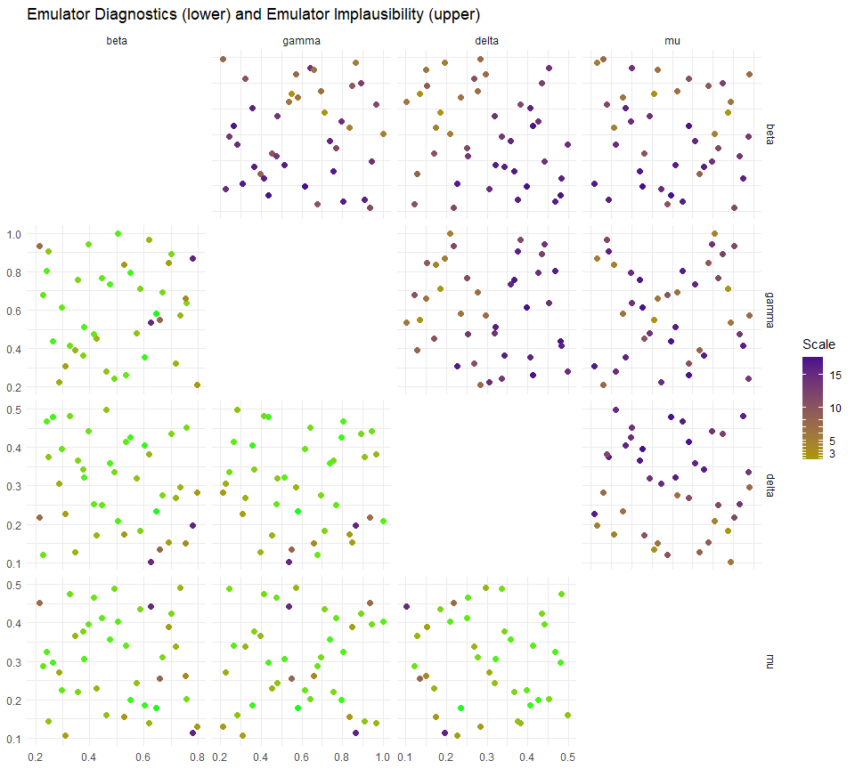

6 Point Generation
Having generated emulators based on the first wave of data, evaluated their suitability, and considered a means by which to rule out parameter sets, we can now produce a new set of parameter sets to pass to the model.
This section is divided in two parts:
We first see how to generate new sets of parameters (that will be used to train wave 1 emulators);
We then compare the performance of the initial parameter sets with the new parameter sets. In other words, we ask: do the simulator outputs at the new parameter sets match the observations better than the simulator outputs at the initial parameter sets?
6.1 Generating sets of parameters for the next wave
The function generate_new_runs is designed to generate new sets of parameters; its default behaviour is as follows.
- If no prior parameter sets are provided, a set is generated using a Latin Hypercube Design, rejecting implausible points;
- Using these as seeding points, more parameter sets are generated using importance sampling to attempt to fully cover the non-implausible region;
- Finally, pairs of parameter sets are selected at random and more sets are sampled from lines connecting them, with particular importance given to those that are close to the non-implausible boundary.
All of these steps can be overridden or modified, but the default behaviour allows for a good rudimentary search of the non-implausible space.
new_points <- generate_new_runs(ems0_adjusted, ranges, n_points = 120, z = targets)
#> 410 non-implausible points generated. Applying V-optimality...
#>
plot(new_points, pch = 16, cex = 0.5)
We can start to see the structure of the non-implausible region, here. The wave_points function provides a better indication of the difference between the two sets of wave data.

Here wave0 points are in yellow and new_points are in purple. The plots in the main diagonal show the distribution of points in wave0 and that of new_points.
6.2 Comparing next and old parameter sets
Now we can put new_points into the model and obtain the outputs:
Binding together new_points and next_wave we obtain wave1, the full data for the next wave.
We can see how much better the wave1 parameter sets perform compared to the original wave0 parameter sets using simulator_plot.
wave1 <- data.frame(cbind(new_points,next_wave))%>%
setNames(c(names(ranges),paste0("I",seq(10,30,by=5)), paste0("EV",seq(10,30,by=5))))
all_points <- list(wave0[1:9], wave1[1:9])
simulator_plot(all_points, targets)
We can see that, compared to the space-filling random parameter sets used to train the first emulators, the new parameter sets are in much closer agreement with the data we wish to match to. Subsequent waves, trained on these new parameter sets, will be more confident in the new non-implausible region and will therefore refine the region in light of the greater certainty.